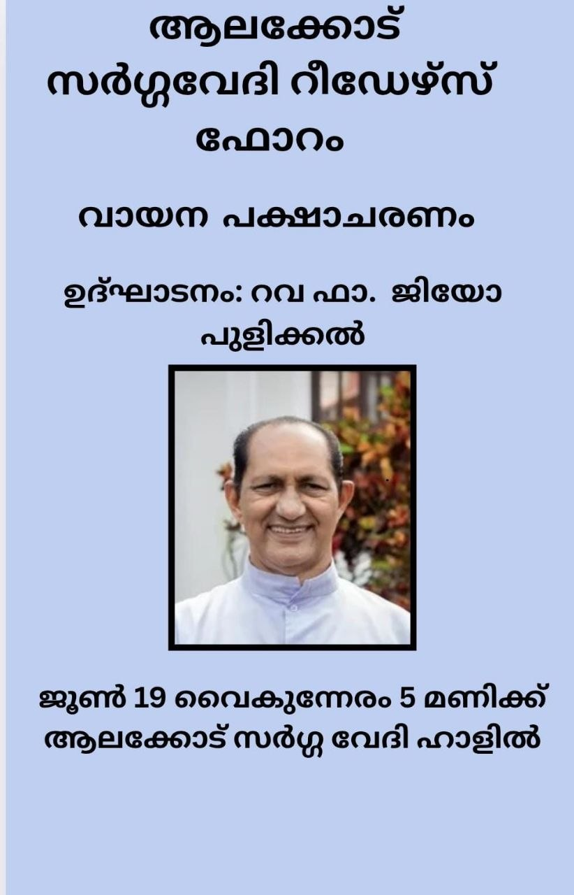
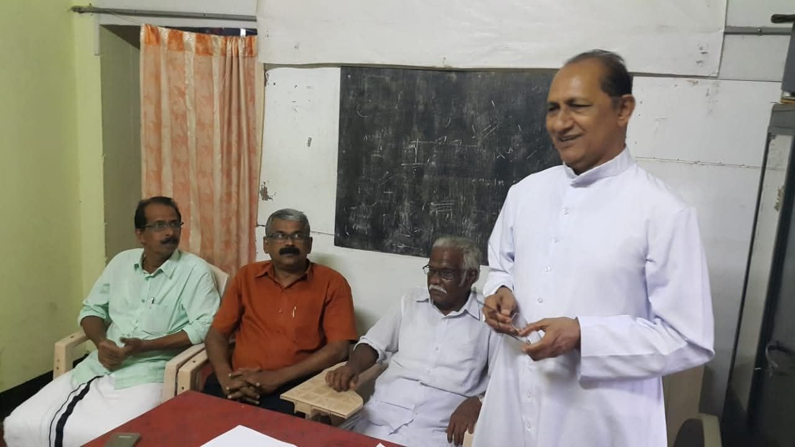
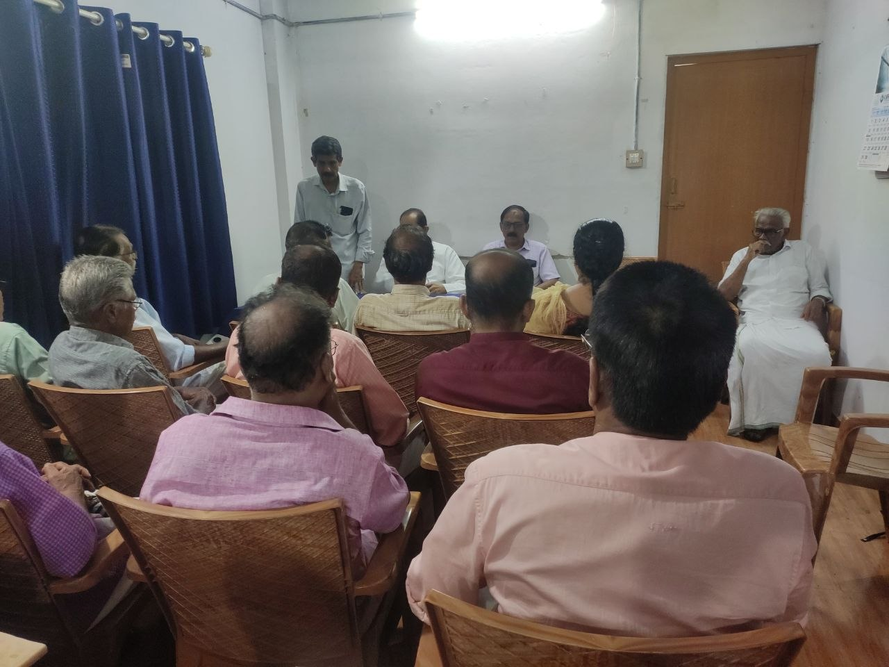
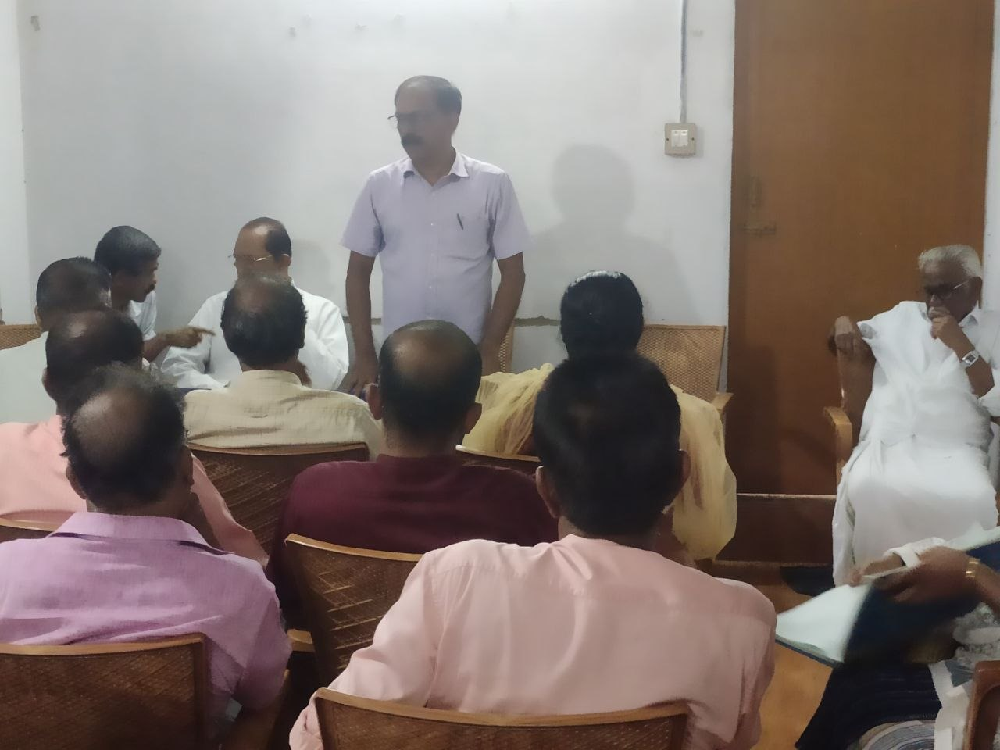
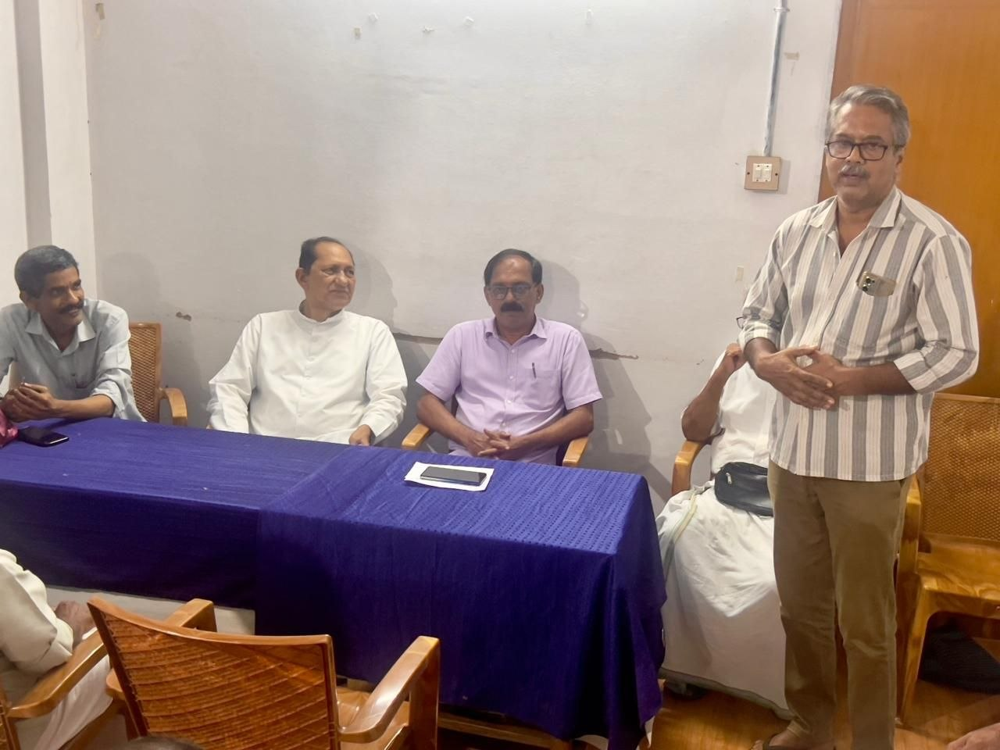
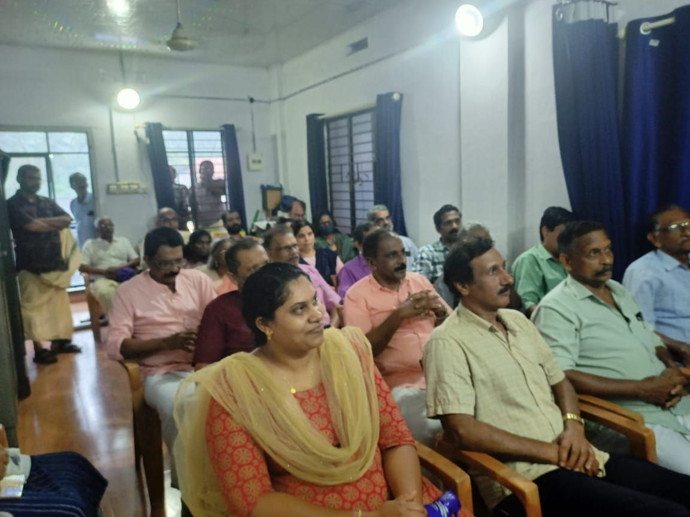
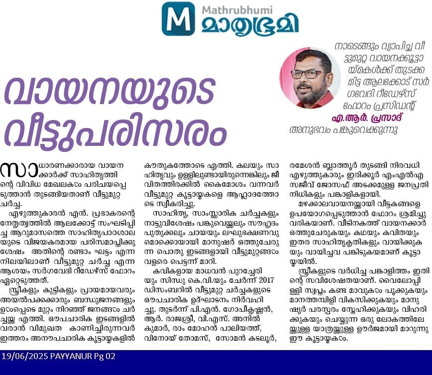
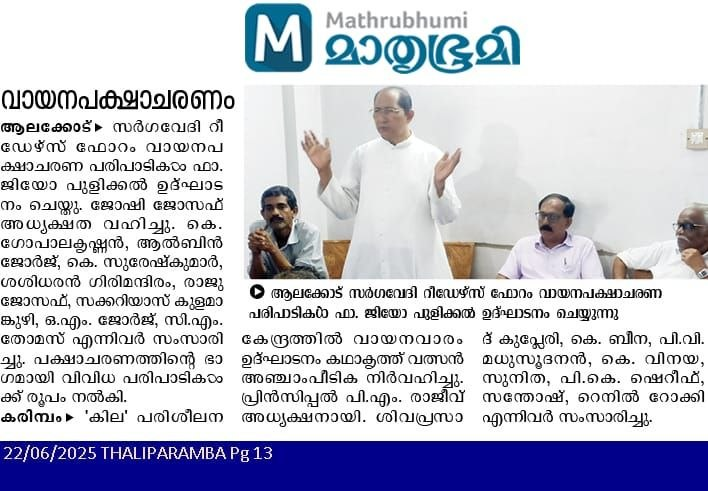
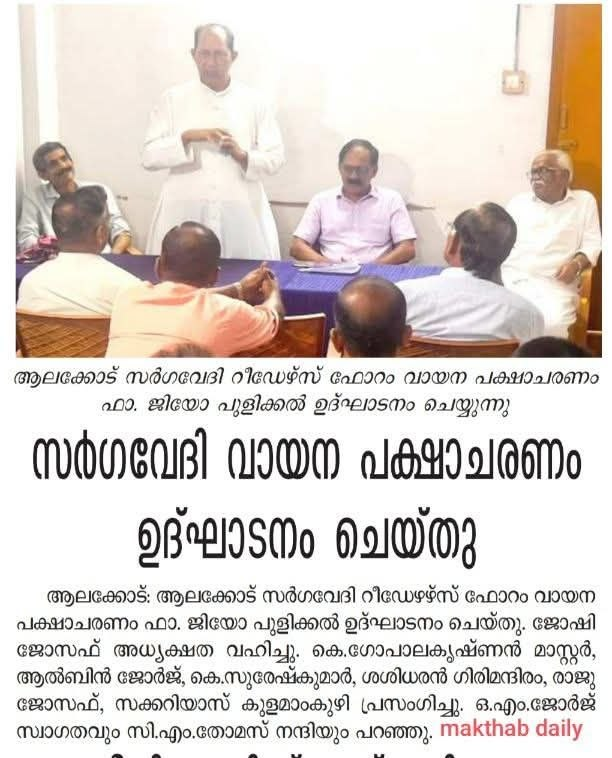

ഇന്നത്തെ പരിപാടി എന്ത് കൊണ്ടും നല്ലൊരു സായാഹ്നം ആയി മാറി. സംഘാടനം, പങ്കാളിത്തം, ചർച്ച എല്ലാം നന്നായി...
പുളിക്കലച്ചനെ ഉദ്ഘാടകനായി തീരുമാനിച്ചത് എന്ത് കൊണ്ടും നന്നായി. നല്ല വിഷയാവതരണവും കവിതാവതരണവും ആയിരുന്നു. കവിത ചൊല്ലുന്നതിനൊപ്പം അതിൻ്റെ അർത്ഥതലങ്ങൾ, ആശയ ലോകം എന്നിവയിലൂടെ ഭാവാത്മകമായി സഞ്ചരിച്ചു എന്നത് അച്ചൻ്റെ ദീർഘ നാളത്തെ അധ്യാപനത്തിൻ്റെ മികവായി തന്നെ കണക്കാക്കാം.
വായനയുടെ പ്രാധാന്യത്തേയും അച്ചൻ ഭംഗിയായി അവതരിപ്പിച്ചു.
തുടർ ചർച്ചകളും നന്നായി.
ഗോപാലകൃഷ്ണൻ മാഷും ശശി സാറും രാജു സാറും ഒക്കെ വളരെ കാമ്പുള്ള ആശയങ്ങൾ അവതരിപ്പിച്ചു.
സക്കറിയാസ് ചേട്ടൻ്റെ പാട്ടും നന്നായി.
ചർച്ചകളോട് ഏറ്റവും ജനാധിപത്യപരമായി അച്ചൻ പ്രതികരിച്ചു എന്നതും ശ്രദ്ധേയമായി തോന്നി.
പാവങ്ങളിലെ ബിയാങ് വെന്യുവിനെ പോലെ, ഹിഗ്വിറ്റയിലെ ഗിവർഗീസ് അച്ചനെ പോലെ ഒക്കെ ഉള്ള അച്ചൻമാരെ വാർത്തെടുക്കാൻ അച്ചൻ്റെ അധ്യാപനത്തിലൂടെ കഴിയട്ടെ എന്നാഗ്രഹിക്കുന്നു.
ആൽബിൻ സാർ ചർച്ചതുടങ്ങിവച്ചുകൊണ്ട് സംസാരിച്ചത് അല്പം നീണ്ടുപോയതിൽ ഒന്നും പറയാനില്ല. കാരണം സദസ്സിലെ മുഴുവൻ ആൾക്കാർക്കും പറയാനുണ്ടായിരുന്ന കാര്യങ്ങളാണ് അദ്ദേഹം വളരെ സരസമായും എന്നാൽ ആധികാരികമായും പറഞ്ഞത്👍. മുന്നൊരുക്കങ്ങളൊന്നും കൂടാതെ തനിക്കു മുൻപ് സംസാരിച്ചയാളുടെ വാക്കുകളെ ഉദ്ധരിച്ചു കൊണ്ടും മറ്റും ഇത്രയും ഭംഗിയായി പ്രസംഗം ചെയ്യുവാൻ കഴിയുന്ന ആൽബിൻ മാഷുടെ ഫാൻസ് ആയിത്തീർന്നിരിക്കുന്നു നമ്മൾ റീഡേഴ്സഫോറം കാർ.. 🥰
പുളിക്കലച്ചൻ കുറച്ചു കൂടി സമയമെടുത്തു പ്രഭാഷണം ചെയ്യും എന്ന് പ്രതീക്ഷിച്ചിരുന്നു. അദ്ദേഹത്തെ കുറച്ചു കൂടി കേൾക്കാൻ എല്ലാവർക്കും ആഗ്രഹം ഉണ്ടായിരുന്നുവെന്ന് തോന്നി. (ഞാൻ വന്ന ഓട്ടോയുടെ ഡ്രൈവർ പോലും പറഞ്ഞിരുന്നു വളരെ നല്ലൊരു പ്രഭാഷകനെയാണല്ലോ കിട്ടിയിരിക്കുന്നത് എന്നൊക്കെ)സമയപരിമിതികൊണ്ടാവും അദ്ദേഹം ചുരുക്കിയത്. പക്ഷെ കവിതയിലെ പദപ്രയോഗങ്ങളെക്കുറിച്ചും തരളപദങ്ങളുടെ മനോഹാരിതയെക്കുറിച്ചും അവ നമ്മിലുണർത്തുന്ന ദൃശ്യാനുഭവത്തെക്കുറിച്ചുമെല്ലാം ഒരു അധ്യാപകൻ തന്റെ കുട്ടികൾക്ക് പറഞ്ഞുകൊടുക്കുമ്പോലെ ഉദാഹരണസഹിതം വിശദീകരിച്ചത് ഹൃദയസ്പർശിയായി. അദ്ദേഹത്തിന്റെ സ്വന്തം കവിത വളരെ നന്നായിരുന്നു... അർത്ഥപൂർണം....
എല്ലാം കൊണ്ടും ഇന്നത്തെ പരിപാടി ഗംഭീരമായി... 👏👏
1) സന്തോഷ് പി ആർ - മനുഷ്യന് ഒരു ആമുഖം
2) എ ആർ പ്രദീപ് - വേജ്ജായ ചരിതം, നിത്യ ചൈതന്യയതിയുടെ ആത്മ കഥ
3) അനൂപ് - ഫ്രാൻസിസ് ഇട്ടിക്കോര
4) സരോജനി ടീച്ചർ - ആ നദിയോട് പേര് ചോദിക്കരുത്, പെഡ്രോ പരാമോ
5) പ്രിയ രാധാകൃഷ്ണൻ - പാർവ്വതി, വല്ലി, ഡാർക്ക് നെറ്റ്, വേജ്ജരായ ചരിതം
6) സിന്ധു ഉല്ലാസ് - ഉടൽഭാഷകൾ, ഓജോബോർഡ്, സുജാത, രണ്ടു ദിവസത്തെ വിചാരണ, തട്ടകം
7) എ ആർ പ്രസാദ് - മതപ്പാടുകൾ, കാട്ടൂർ കടവ്, തപോമയിയുടെഅച്ഛൻ
8) രാജുസാർ - ഗ്രീക്ക് പാഷൻ
9) പി ആർ ഗോപി - മയ്യഴിപ്പുഴയുടെ തീരങ്ങളിൽ, അപസർപ്പകൻ, അന്വേഷിച്ചു കണ്ടെത്തിയില്ല
10) ജിതേഷ് - 124
11) യശോദടീച്ചർ - പൗലോകൊയ്ലോ - ആൽകെമിസ്റ്റ്
12) ജോർജ് മേലുക്കുന്നേൽ - പുറപ്പെട്ടു പോകുന്ന വാക്ക് - കെ ആർ ഗൗരിയമ്മ
13) ജോർജ് ഒ എം - പാവങ്ങൾ
14) ജയശ്രീ - മുതൽ
15) ജ്യോതി സ്മിജേഷ് - എന്റെ ജീവിതകഥ - ഹെലൻ കെല്ലർ.
16) സക്കറിയസാർ - കവിത മാംസഭോജിയാണ്
17) സുരേഷ് ബാബു - ദിശ
18) സിസി - തട്ടകം
19) ഷിജിൽ - പുറ്റ്
20) അനിൽ സാർ - വിശുദ്ധപാപങ്ങളുടെ ഇന്ത്യ, ദുര്യോധനൻ കൗരവവംശത്തിന്റെ ഇതിഹാസം


മക്തബ്